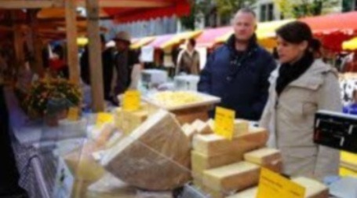

"For cheese lovers!!!"
ARTISAN CHEESE
FESTIVAL - 2022
Conference series with the participation of experts in the manufacture of mature cheeses and artisanal
cheese making.
3th Edition.
2022.10.12 (THUR) ~ 13(FRI)
@ San Miguel de Sema, Boyacá, Colombia.
Main Program

Lecture
Listen to speakers on good practices and cheese production techniques.

Exhibition
Sample and tasting of different types of cheese.

Forum
Have the time to share your thoughts and opinions with experts.

Workshop
Guided class and recipes of our matured cheese.

Network
Great opportunity to network with people related to the world of dairy
products and artisanal cheese
"For cheese lovers!!!"
ARTISAN CHEESE
FESTIVAL - 2022
The Artisan Cheese Festival brings together the community of experts, academics and activists related to
dairy products and artisan cheese makers.
This year we hope to have international guests.
Please contact us by email fot any further questions about Artisan Cheese Festival - 2022!
acfestival2022@artisancheese.org
Artisan Cheese Festival 2022 Logo

See the past Artisan Cheese Festivals
Take a look of the past two Artisan Cheese Festival

2021
Artisan Cheese Festival

2020
Artisan Cheese Festival
Partners
Artisan Cheese
2017 Artisan Cheese
Rigths Reserved